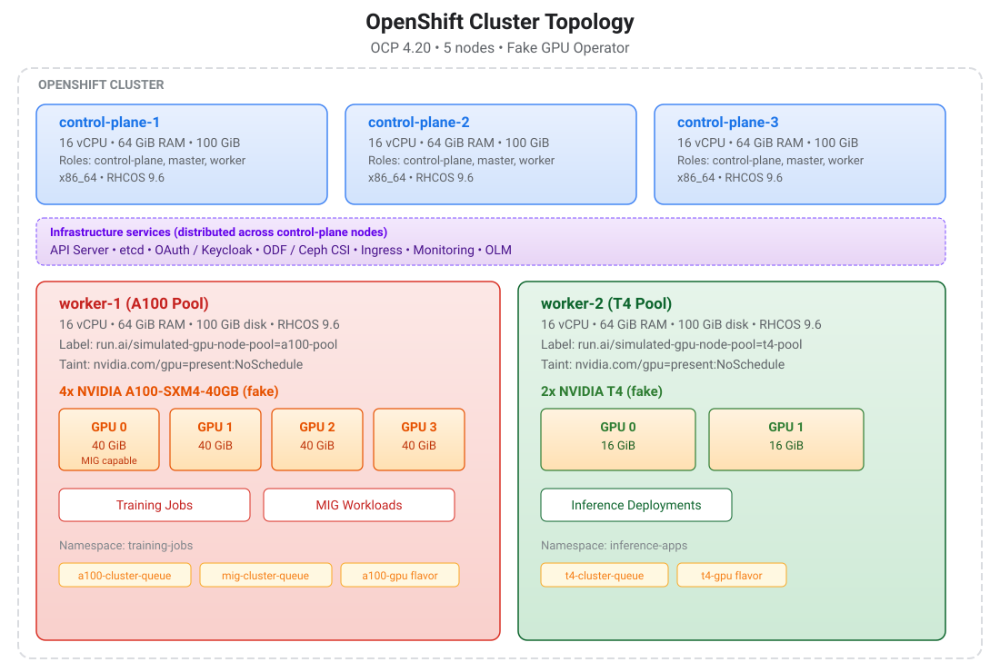

Lab Environment
Ordering Your Lab on the Red Hat Demo Platform (RHDP)
-
Log in to the RHDP portal.
-
Red Hat associates: https://demo.redhat.com/
-
Red Hat partners: https://partner.demo.redhat.com/
-
-
Search for the catalog entry: Red Hat OpenShift Container Platform Cluster (CNV).
Direct link: Red Hat OpenShift Container Platform Cluster (CNV)
-
On the catalog page, click the Order button.
-
Fill out the required details in the order form.
-
Activity:
Practice/Enablement -
Purpose:
Learning about the product -
cluster_size:
multinode -
OpenShift version:
4.20 -
OpenShift Worker count: 2
-
OpenShift Worker memory:
64Gi -
OpenShift Worker CPU:
16 -
Select the
Create users on cluster?option to create users in OpenShift -
User count:
5
-
-
Review the IMPORTANT information text at the bottom of the form and select the box labeled:
"I confirm that I understand the above warnings." -
Click the Order button to start provisioning your lab environment.
| This lab can take approximately 60-90 minutes to be provisioned. You will receive an email with access details after your lab environment is provisioned. |
Cluster Specifications
This course was tested on the following cluster configuration. If you are provisioning your own cluster outside of RHDP, match these specifications as closely as possible.
Cluster Topology
Your cluster must not have any nodes with real NVIDIA GPUs attached, and the NVIDIA GPU Operator must not be installed.
This course uses the Fake GPU Operator instead, which registers its own device plugin for the nvidia.com/gpu resource type.
The NVIDIA GPU Operator does the same thing — both operators attempt to register a device plugin for nvidia.com/gpu with kubelet, and only one device plugin can own a given resource type per node.
If both are present, the device plugins conflict: kubelet receives competing registrations, GPU counts become unpredictable, and pod scheduling breaks silently.
Use a CPU-only cluster with no physical GPUs for this course.
|
The diagram below shows the cluster architecture after the Fake GPU Operator is installed in Platform Setup^. The two dedicated worker nodes simulate NVIDIA GPUs that Kueue manages throughout the course.

Tested Versions
| Component | Version |
|---|---|
OpenShift Container Platform |
4.20.22 |
Kubernetes |
v1.33.10 |
Red Hat Enterprise Linux CoreOS |
9.6 (Plow) |
CRI-O |
1.33.11 |
|
4.20.22 |
Node Configuration
The cluster has 5 nodes: 3 control-plane nodes (which also carry the worker role) and 2 dedicated worker nodes.
| Node Role | Count | vCPUs | Memory | Disk | Architecture |
|---|---|---|---|---|---|
Control-plane + worker |
3 |
16 |
64 GiB |
100 GiB |
x86_64 (amd64) |
Worker (dedicated) |
2 |
16 |
64 GiB |
100 GiB |
x86_64 (amd64) |
Storage
The cluster uses OpenShift Data Foundation (ODF) with an external Ceph cluster.
| StorageClass | Provisioner |
|---|---|
|
|
|
|
|
|
Platform
| Property | Value |
|---|---|
Infrastructure platform |
BareMetal (virtualized via RHDP) |
Identity provider |
Red Hat Build of Keycloak (RHBK) |
Pre-installed operators |
ODF, CNV, Keycloak, cert-manager |
Minimum Requirements for Your Own Cluster
If provisioning outside of RHDP, your cluster needs at minimum:
-
OpenShift 4.17+ (tested on 4.20)
-
2 dedicated worker nodes with at least 16 vCPUs and 64 GiB RAM each
-
Cluster admin access via
oc -
cert-manager Operator installed
-
Persistent storage (any CSI-based StorageClass)
The control-plane nodes also having the worker role is not required.
The lab exercises only use the 2 dedicated worker nodes for GPU simulation.
|
Verifying Cluster Access
Once your lab is provisioned, log in with the credentials from the RHDP email:
$ oc login -u admin -p <password> OPENSHIFT_CLUSTER_API_URL
Login successful.
...Verify the cluster nodes:
$ oc get nodes
NAME STATUS ROLES AGE VERSION
control-plane-cluster-vnnbf-1 Ready control-plane,master,worker 19h v1.33.11
control-plane-cluster-vnnbf-2 Ready control-plane,master,worker 19h v1.33.11
control-plane-cluster-vnnbf-3 Ready control-plane,master,worker 19h v1.33.11
worker-cluster-vnnbf-1 Ready worker 78m v1.33.11
worker-cluster-vnnbf-2 Ready worker 77m v1.33.1You should see 3 control plane nodes and 2 worker nodes.
Required CLI Tools
Ensure the following tools are installed on your workstation:
-
oc- OpenShift CLI -
helm- Helm 3.x -
git- for cloning the lab files repository -
python3- used for JSON formatting in verification commands
Cloning the Lab Files Repository
The lab files (Helm charts, Kueue configuration, workload manifests, and scripts) are in a separate repository from the course content.
$ git clone https://github.com/RedHatQuickCourses/genai-apps.git
$ cd genai-apps/kueueSetting Worker Node Variables
Identify your two worker nodes and export them as environment variables. These variables are used in all subsequent commands throughout the course.
$ oc get nodes -l \
node-role.kubernetes.io/worker,\!node-role.kubernetes.io/control-plane
NAME STATUS ROLES AGE VERSION
worker-cluster-vnnbf-1 Ready worker 84m v1.33.11
worker-cluster-vnnbf-2 Ready worker 83m v1.33.11
$ export WORKER_NODE1=<your-worker-1-name>
$ export WORKER_NODE2=<your-worker-2-name>
If you open a new terminal session, do not forget to re-export $WORKER_NODE1 and $WORKER_NODE2 before executing commands.
|
Verifying Your Lab Environment
| If you have previously run any part of this course on this cluster (or a previous student used the same RHDP environment), leftover resources can cause unexpected failures. Run the cleanup script first to ensure a clean starting state, then verify with the verification script. |
Step 1: Clean Up Previous Runs (Optional)
If you have not provisioned a new cluster, and have executed all or part of the hands-on labs, run the cleanup script to remove all lab resources and start from a clean state:
$ bash scripts/cluster-reset.shThis command is safe to run on a fresh cluster. It does nothing if there are no lab resources to remove. See Cluster Reset for details on what the script removes.
Step 2: Verify the Environment
Run the verification script to confirm your cluster is ready for the course:
$ bash scripts/verify-lab-env.sh
1. Cluster Access
✓ Logged in as admin
✓ User has cluster-admin privileges
2. OpenShift Version
✓ OpenShift 4.20.23 (Kubernetes v1.33.11)
✓ Version 4.20 meets minimum requirement (4.17+)
3. Node Configuration
✓ 5 total nodes in cluster
✓ 2 dedicated worker nodes found
→ Worker 1: worker-cluster-vnnbf-1
→ Worker 2: worker-cluster-vnnbf-2
✓ worker-cluster-vnnbf-1: 16 vCPUs, 63 GiB RAM
✓ worker-cluster-vnnbf-2: 16 vCPUs, 63 GiB RAM
4. No Leftover Lab Resources
✓ No leftover lab resources found
5. Required CLI Tools
✓ oc:
✓ helm: v4.2.0+g0646808
✓ git: git version 2.50.1 (Apple Git-155)
✓ python3: Python 3.13.7
6. cert-manager Operator
✓ cert-manager installed: cert-manager-operator.v1.19.0
7. Cluster Health
✓ Authentication operator: Available
✓ No degraded cluster operators
Summary
All 16 checks passed. Your cluster is ready for the course.The script checks the following:
-
Cluster admin access and OCP version
-
At least 2 dedicated worker nodes with sufficient CPU and memory
-
No leftover lab resources (taints, labels, namespaces, operators)
-
Required CLI tools (
oc,helm,git,python3) -
cert-manager Operator installed
-
Cluster health (authentication operator, no degraded operators)
If all checks pass, you will see:
Summary
All 15 checks passed. Your cluster is ready for the course.If any checks fail, the script tells you exactly what to fix.